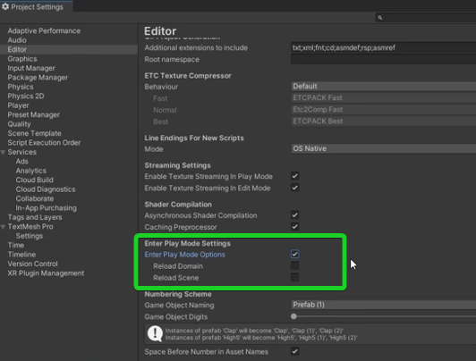

🮠Unity – Základy & Tipy pro rychlý start
🚀 Praktické rady pro efektivnà práci v Unity, rychlé prototypovánà a výběr správného typu projektu.
⚡ Rychlejšà spuštěnà hry
⩠Jak zrychlit vstup do Play módu?
| 🏷️ Možnost | 💡 Popis |
|---|---|
| 🔄 Reload Domain | Znovunačte všechny skripty – jistota změn, ale pomalejÅ¡Ã spuštěnÃ. |
| 🔠Reload Scene | Znovunačte aktuálnà scénu – vhodné pro čistý stav, může zpomalit start. |
Pokud tyto možnosti vypneš, Unity se vyhne časově náročným procesům a Play mód se spustà rychleji.
